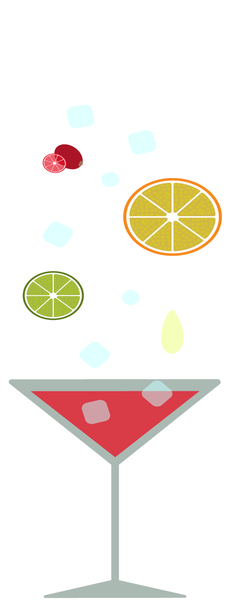

Til hverdag
Og
Til fest
Virgin
Hvad gør Virgin til din nye yndlings drink?
Er det den lækre friske lime der gør det?
Eller er det mikset af lime med den velkendte tranebær saft, som er hovedingredienserne i vores nye skud på stammen? Nemlig Virgin’s helt egen Cosmopolitan.
Hvad gør Virgin så anderledes fra andre producenter af Cosmopolitan?
Vi sætter stor fokus på ordentlige råvare. Alt er økologisk, fremstillet under ordentlige forhold og der er tilført minimal mængde sukker.
Vi sætter pris på de rene smage og derfor undgår vi alle former for syntetiske produkter.
Du kan købe cosmopolitan i din lokale købmand.
Drinken indeholder 0,0% alkohold.

Indgredienser
- Tranebær saft
- Limesaft
- Appelsinsaft
- Sirup
Cosmopolitan Cupcake
Dej:
 140g Rørsukker
140g Rørsukker - 40g Smør stuetemperatur
- 120g Hvedemel
- 1 tsk Bagepulver
- 1 Æg
- 75ml Sødmælk
- 3 spsk Virgin cosmopolitan
Smørcream:
- 80g Smør stuetemperatur
- 250g Flormelis
- 2 tsk Sødmælk
- 2 tsk Virgin cosmopolitan
Sådan gør du:
- Tænd ovnen på 170°C normal ovn.
- Saml smør, mel, sukker og bagepulver i en stor skål og piske det langsomt indtil det ligner brødkrummer.
- I en anden skål samles æg, virgins cosmopolitan og mælk. Herefter hældes det langsomt i den tørre blanding som piskes samtidig. Når dejen er samlet, fordeles dejen i 12 cupcake eller muffins forme gerne så de er omkring ⅔ fulde.
- Bag dem i ovenen i ca. 25 min eller indtil de er gyldenbrune og du kan stikke i dem uden at dejen hænger ved.
- For at lave frosting, skal smør og flormelis piskes sammen og derefter tilføjes mælk og Virgin cosmopolitan. Herefter skal det piskes til det samles og det er blødt og luftigt.
- Når cupcakesene er kølet af pyntes de med frostingen og eventuelt med tranebær på en cocktailpind eller andet pynt.
Virgin
Sætter sommeren i gang!
Vi fra Virgin invitere til et brag af en fest for at fejre sommerens begyndelse. Der vil hele aften være masser af mad og ikke mindst vores nyeste virgin cocktail Cosmopolitan. Maden vil være et miks af friske salater og til den søde tand vil der være ikke andet en vores helt egen cupcake - lavet med vores nye virgin cocktail - Cosmopolitan! Kom og fejr sommer med os!